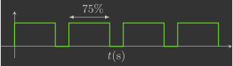
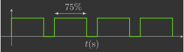
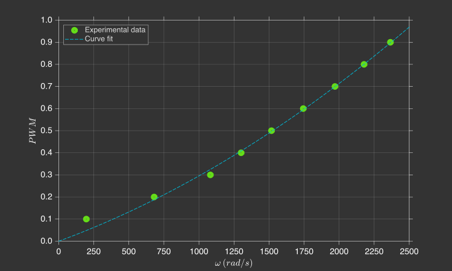

Identificação dos coeficientes do motor
Nesta secção, você irá determinar experimentalmente os coeficientes do motor elétrico.
Fundamentos teóricos
O PWM ("pulse width modulation") é uma técnica para controlar a potência de um sinal utilizando uma comutação digital. Ao mudar rapidamente o sinal entre o máximo e zero ("on-off"), e variando a fração de tempo que o sinal está no máximo, pode-se controlar a potência transmitida (isto é, modulando a largura do pulso).

 

Este é o mecanismo utilizado pelo Crazyflie para acionar seus motores. Já sabemos que no código é possível definir um valor real entre 0.0 e 1.0 que corresponde ao sinal PWM do motor.
Você irá implementar uma função que, dada uma velocidade angular desejada \(\omega\), determine o sinal PWM correspondente.
Procedimento experimental
Para medir a velocidade angular da hélice, você pode utilizar um instrumento de medição do número de rotações chamado tacômetro. Para utilizá-lo, você deve fixar um pequeno pedaço de fita refletora em uma das hélices. Certifique-se de usar apenas um pequeno pedaço de fita e aplicar suavemente na hélice, caso contrário você interferirá no fluxo de ar e obterá dados ruins.

O tacômetro pode detectar quando a tira passa pelo seu feixe de luz, assim, a velocidade de rotação é calculada contando quantas vezes a tira passa em um determinado período de tempo. O tacômetro DT-2234C+ registra a velocidade angular enquanto você pressiona o botão TEST e, uma vez que este botão é liberado, ele armazena os valores mínimo, máximo e médio, que você pode conferir apertando o botão MEM.
Você deve carregar no drone um programa que ligue apenas o motor cuja hélice está com o pedaço de fita refletora com um determinado valor de sinal PWM. Serão levantados dados de velocidade angular da hélice para 10 valores distintos de sinal PWM (0.1 até 1.0), e, para cada valor de sinal PWM, você deverá realizar o experimento 3 vezes e tirar uma média. Para facilitar o experimento, você pode controlar o valor do PWM com os botões Up e Down do Command Based Flight Control através do CFClient.

Crie um arquivo chamado motor_coeficients.c dentro da pasta src/identification com o seguinte código:
#include "FreeRTOS.h" // FreeRTOS core definitions (needed for task handling and timing)
#include "task.h" // FreeRTOS task functions (e.g., vTaskDelay)
#include "supervisor.h" // Functions to check flight status (e.g., supervisorIsArmed)
#include "commander.h" // Access to commanded setpoints (e.g., commanderGetSetpoint)
#include "motors.h" // Low-level motor control interface (e.g., motorsSetRatio)
// Global variables to store the desired setpoint, the current state (not used here) and the computed PWM value.
setpoint_t setpoint;
state_t state;
float pwm;
// Main application
void appMain(void *param)
{
// Infinite loop (runs forever)
while (true)
{
// Check if the drone is armed (i.e., ready to fly)
if (supervisorIsArmed())
{
// Fetch the latest setpoint from the commander and also fetch the current estimated state (not used here)
commanderGetSetpoint(&setpoint, &state);
// Compute a PWM value proportional to the commanded altitude (Z axis position)
// The altitude command increases in 0.5 m steps, and we want the PWM to increase by 0.1 for each step.
// Therefore, we divide Z by 5.0 so that: 0.5 m → 0.1 PWM
pwm = (setpoint.position.z) / 5.0f;
}
else
{
// If not armed, stop the motor (set PWM to zero)
pwm = 0.0f;
}
// Send the PWM signal to motor M1, scaling it to match the expected range [0, UINT16_MAX]
motorsSetRatio(MOTOR_M1, pwm * UINT16_MAX);
// Wait for 100 milliseconds before running the next iteration (10 Hz control loop)
vTaskDelay(pdMS_TO_TICKS(100));
}
}
As etapas para coletar um dado são as seguintes:
- Garanta que a bateria do drone está carregada
- Prenda o drone na mesa com uma fita crepe
- Arme o drone apertando o botão
Armno CFClient - Ligue o motor com um valor específico de sinal PWM com o Command Based Flight Control do CFClient
- Aponte o tacômetro para a hélice segurando a aproximadamente \(30cm\) de distância e, em seguida, pressione o botão
TEST - Mantenha o botão
TESTpressionado o tempo todo, certificando-se de que o feixe aponta para onde a faixa refletora passa - Mantenha essa posição por alguns segundos e solte o botão
TEST - Pressione o botão
MEMuma vez e espere aparecer a segunda leitura, que corresponde à velocidade máxima (em \(rpm\)) observada durante o experimento - Anote o número que aparece na tela
- Repita as etapas 4-9 para outros valores de sinal PWM
Após o experimento, você deverá coletar dados para preencher a tabela abaixo.
| PWM | N1 (rpm) | N2 (rpm) | N3 (rpm) |
|---|---|---|---|
0.1 |
|||
0.2 |
|||
0.3 |
|||
0.4 |
|||
0.5 |
|||
0.6 |
|||
0.7 |
|||
0.8 |
|||
0.9 |
|||
1.0 |
Análise de dados
Utilizando os dados coletados, você deverá ajustar uma curva que correlacione a velocidade angular das hélice \(\omega\) com o sinal PWM correspondente do motor (note que você precisa converter a velocidade angular de \(rpm\) para \(rad/s\)).

Há diversos tipos de funções de ajuste para esta curva (linear, exponencial, polinomial, etc.):
Para definir qual é melhor para este caso, é necessário se aprofundar na dinâmica do sistema. O esquema eletromecânico de um motor elétrico com uma hélice pode ser visto no diagrama abaixo1.

Onde:
- \(e_a\) - Tensão de armadura (\(V\))
- \(i_a\) - Corrente de armadura (\(A\))
- \(R_a\) - Resistência de armadura (\(\Omega\))
- \(L_a\) - Indutância de armadura (\(H\))
- \(e_b\) - Tensão contra-eletromotriz (\(V\))
- \(\omega\) - Velocidade angular do motor/hélice (\(rad/s\))
- \(\tau_m\) - Torque do motor (\(N.m\))
- \(k_d\) - Constante de arrasto da hélice (\(N.m.s^2/rad^2\))
- \(b\) - Coeficiente de atrito viscoso do motor (\(N.m.s/rad\))
- \(I\) - Momento de inércia do motor/hélice (\(kg.m^2\))
Exercício 1
Aplique a lei de Kirchoff das tensões no circuito de armadura.
Resposta
Exercício 2
Aplique a 2º lei de Newton em torno do eixo do motor.
Resposta
Em um motor de corrente contínua, o torque do motor \(\tau_m\) é diretamente proporcional à corrente de armadura \(i_a\), e a tensão contra-eletromotriz \(e_b\) é diretamente proporcional à velocidade angular \(\omega\):
Onde:
- \(K_m\) - Constante de torque do motor (\(N.m/A\) ou \(V.s/rad\)).
Exercício 3
Substitua o torque do motor \(\tau_m\) e a tensão contra-eletromotriz \(e_b\) nas duas equações diferenciais obtidas anteriormente.
Resposta
Quando o motor entra em regime, a corrente de armadura \(i_a\) e a velocidade angular \(\omega\) tornam-se constantes (essa é a definição de ``regime''):
Exercício 4
Iguale as derivadas da corrente de armadura \(i_a\) e da velocidade angular \(\omega\) a zero e isole a corrente de armadura \(i_a\) nas duas equações.
Resposta
Exercício 5
Iguale a corrente de armadura \(i_a\) obtida em cada uma das equações e isole a tensão de armadura \(e_a\) na equação.
Resposta
O sinal PWM é a razão entre a tensão de armadura \(e_a\) e a tensão da bateria \(e_s\):
Exercício 6
Substitua a tensão de armadura \(e_a\) na equação anterior e isole o sinal PWM na equação.
Resposta
Você deve ter chegado a:
Como \(R_a\), \(k_d\), \(b\), \(K_m\) e \(e_s\) são parâmetros constantes, podemos agrupá-los em duas constantes:
Ou seja, o tipo de função mais adequado para realizar esse ajuste de curva é uma função polinomial de 2º grau cujo coeficiente de ordem zero é nulo:
Dessa forma, ao invés de determinar os valores de cada parâmetro (\(R_a\), \(k_d\), \(b\), \(K_m\) e \(e_s\)), você irá determinar experimentalmente apenas os valores dos coeficientes \(a_2\) e \(a_1\) (dica: utilize o Curve Fitting Toolbox do MATLAB).
Validação dos resultados
Uma vez determinados os coeficientes \(a_2\) e \(a_1\), declare os seus valores no código (linhas 10 e 11) e modifique seu programa para que, dada uma velocidade angular \(\omega\) comandada (linhas 30 e 35), ele determine o sinal PWM correspondente (linha 41) e envie isso ao motor M1 (linha 50). Note que estamos imprimindo no console o valor de velocidade angular comandada (linha 38) e, para isso, devemos incluir uma biblioteca adicional (linha 6).
#include "FreeRTOS.h" // FreeRTOS core definitions (needed for task handling and timing)
#include "task.h" // FreeRTOS task functions (e.g., vTaskDelay)
#include "supervisor.h" // Functions to check flight status (e.g., supervisorIsArmed)
#include "commander.h" // Access to commanded setpoints (e.g., commanderGetSetpoint)
#include "motors.h" // Low-level motor control interface (e.g., motorsSetRatio)
#include "debug.h" // Debug printing functions (e.g., DEBUG_PRINT)
// Motor coefficients of the quadratic model: PWM = a_2 * omega^2 + a_1 * omega
const float a_2 = 0.0f;
const float a_1 = 0.0f;
// Global variables to store the desired setpoint, the current state (not used here),
// the computed PWM value, and the desired angular velocity (omega)
setpoint_t setpoint;
state_t state;
float pwm;
float omega;
// Main application
void appMain(void *param)
{
// Infinite loop (runs forever)
while (true)
{
// Check if the drone is armed (i.e., ready to fly)
if (supervisorIsArmed())
{
// Fetch the latest setpoint from the commander and also fetch the current estimated state (not used here)
commanderGetSetpoint(&setpoint, &state);
// Compute an angular velocity value proportional to the commanded altitude (Z axis position)
// The altitude command increases in 0.5 m steps, and we want the angular velocity to increase
// by 200 rad/s for each step. Therefore, we multiply Z by 400.0 so that: 0.5 m → 200 rad/s
omega = (setpoint.position.z) * 400.0f;
// Print the computed omega value to the debug console (rounded to nearest integer)
DEBUG_PRINT("Omega (rad/s): %.0f\n", (double)omega);
// Convert angular velocity to PWM using the motor model: PWM = a_2 * omega^2 + a_1 * omega
pwm = a_2 * omega * omega + a_1 * omega;
}
else
{
// If not armed, stop the motors (set PWM to zero)
pwm = 0.0f;
}
// Send the PWM signal to motors M1, scaling it to match the expected range [0, UINT16_MAX]
motorsSetRatio(MOTOR_M1, pwm * UINT16_MAX);
// Wait for 100 milliseconds before running the next iteration (10 Hz control loop)
vTaskDelay(pdMS_TO_TICKS(100));
}
}
O código acima faz uso do Command Based Flight Control para comandar a velocidade angular \(\omega\) em incrementos de \(200rad/s\). Você deve testá-lo verificando se a velocidade angular comandada está próxima2 da leitura do tacômetro.
-
Embora o Crazyflie utilize um motor elétrico de corrente contínua sem escovas e não com escovas, a equação matemática de ambos é equivalente. ↩
-
Ela não vai bater na vírgula, pois fizemos um ajuste de curva. No entanto, essa divergência não será um problema pois ainda vamos fechar a malha de controle em um nível superior. ↩